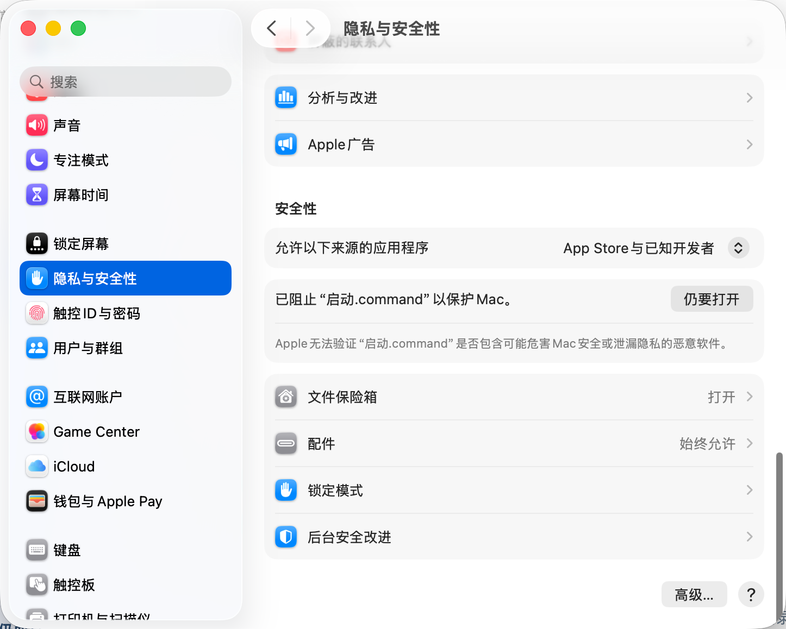
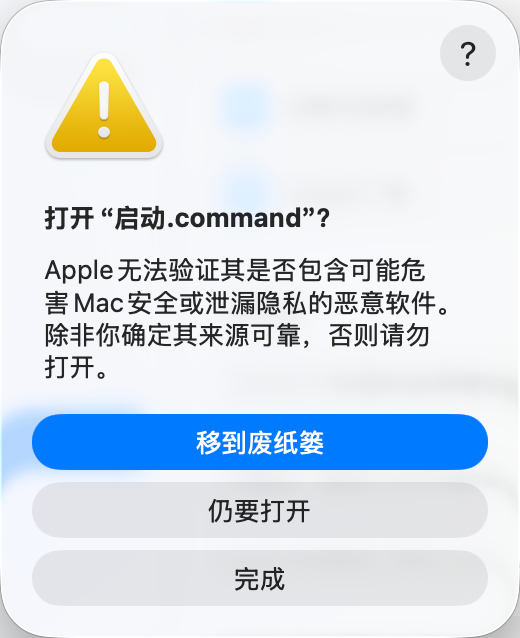

地图选点 · 本机连接
下载一次，
双击打开。
自动准备运行组件，默认地图免配置。连接 iPhone 后，直接搜索选点。
开始使用
三个步骤- 01
下载并启动助手
按电脑系统下载，完整解压后启动。Mac 双击
启动.command，Windows 双击启动.cmd；无需手动安装 Python。Windows 首次使用
Windows 版目前为测试版，尚未完成 Windows 实机验证。简易连接推荐 iOS 17.4 或更新版本，暂不支持 iOS 17.0–17.3.x 和 Windows ARM。iOS 13–16 使用旧版连接方式，具体效果需在设备上确认。
Apple：电脑无法识别 iPhone 时 ↗Windows 提示阻止运行？
当前助手未签名。如果只是 SmartScreen 的“Windows 已保护你的电脑”，请先核对下载来源和文件；确认可信后，可在“更多信息”中选择“仍要运行”。如果没有该选项、设备受组织管理或明确报告病毒，请保留提示并联系管理员或反馈问题，无需关闭系统安全保护。
首次打开被 macOS 拦截？
如果看到“未打开‘启动.command’”或“Apple 无法验证”的提示，按下面 4 步操作。

第 2–3 步 · 系统设置找到“启动.command”右侧的“仍要打开”。 
第 4 步 · 确认打开在弹窗中点击中间的“仍要打开”。 当前助手未经过 Apple 签名和公证。请仅对确认下载自本站且未被改动的文件执行这些步骤，无需关闭系统安全保护。
查看 Apple 官方说明 ↗没有看到“仍要打开”？
重新双击“启动.command”，再返回“隐私与安全性”查看。受公司或学校管理的 Mac 可能需要管理员协助。此说明仅适用于“无法验证”提示；“将损坏电脑”或“文件已损坏”需要另行检查。
- 02
连接 iPhone
用数据线连接到自己的电脑，解锁并信任电脑。开启开发者模式后，在控制台点击“准备连接”。
在哪里开启开发者模式？
在 iPhone 的“设置 → 隐私与安全性 → 开发者模式”中开启，按提示重启并确认。若看不到入口，先确认电脑能识别并信任手机，点击“准备连接”后再查看；Mac 还可通过 Xcode 配对。
- 03
在地图上选择地点
默认地图自动打开，无需申请 Key。搜索地点或点击地图，点击“开始模拟”。结束后点击“停止模拟”，在手机上确认恢复。
搜索地点选择目标开始模拟


常见问题
遇到问题，从这里开始打开网站就能修改手机定位吗？
网站提供公开下载和使用入口。实际的定位操作在你自己的电脑上执行，需要启动连接助手并通过 USB 连接自己的 iPhone。网页本身不能直接修改 iPhone 系统定位。
现在还要申请高德 Key 吗？
不需要。默认使用免配置地图，打开即可搜索、选点。如果更习惯高德，可以在“地图设置”中切换并填写自己的 Key；这是可选项。
免配置地图依赖公共服务，中文地点覆盖、网络可用性可能与高德不同。搜索不到时，可以补充城市名称、点击地图选点，或切换高德。
助手启动失败，或本机页面打不开？
Mac 需要 macOS 13+，Windows 需要 10 / 11 的 Intel / AMD 64 位系统。保持启动窗口开启。首次自动下载组件需要网络；下载中断时重新双击启动即可重试。默认端口被占用时，助手会自动选择其他端口并打开页面。可以把启动窗口里显示的新网址填入上方“其他地址”。
看到“Apple 无法验证”的提示时，请按下载按钮下方的首次打开步骤操作。当前 Mac 助手未签名和公证，需要由使用者在自己的 Mac 上确认。Windows 请先看 Windows 首次使用，确认 Apple 手机连接服务已运行。
支持所有 iPhone 和 App 吗？
Windows 简易版推荐 iOS 17.4+，暂不支持 iOS 17.0–17.3.x；Windows ARM 暂不支持。Windows 版尚待实机验证。
具体效果取决于 iOS 版本、开发者连接状态和目标 App。部分 App 会识别或忽略模拟定位。发送后请在手机上核对实际位置；使用完毕请停止模拟并确认恢复。
关掉网页就会停止模拟吗？
不会。请先在本机控制台点击“停止模拟”，在 iPhone 上确认恢复真实位置，再关闭终端。断线、强制退出和重启后的状态需要在手机上检查。
下载包里包含什么？
自动启动器、单页地图控制台、使用说明和测试源码。包内没有任何人的高德密钥、手机配对记录或运行缓存。首次启动从官方发布源下载运行工具、Python 和连接组件，保存在助手目录。
查看使用说明 ↗